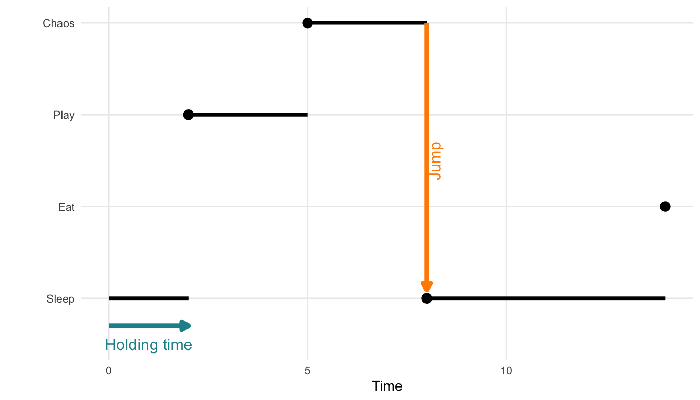
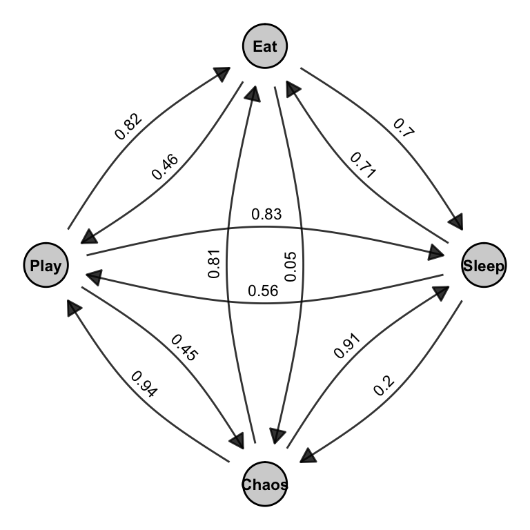

Appendix B — A Continuous-Time Markov Chain (Cat Behavior Model)
To bring the concept of a continuous-time Markov chain (CTMC) to life (or to all nine lives of our cat), consider a model of a house cat’s daily activities. At any given moment, the cat is in one of the following behavioral states:
- \(0\): Sleeping
- \(1\): Eating
- \(2\): Playing
- \(3\): Plotting chaos (e.g., knocking things off shelves)
We define \(X(t)\) as the cat’s current activity at time \(t\). The process \(\{X(t), t \in [0, \infty)\}\) satisfies:
- A finite state space \(S = \{0, 1, 2, 3\}\)
- Continuous transitions over time
- The Markov property: next state depends only on the current state
The cat transitions between states at random times. Each stay in a state lasts for a random holding time, and transitions to the next state occur after a random holding time, and the next state is chosen probabilistically according to a transition (jump) matrix.
The holding time \(T_i\) in state \(i\) is modeled using an exponential distribution: \[ f_{T_i}(t) = \lambda_i e^{-\lambda_i t}, \quad t > 0 \]
- \(\lambda_i\) is the rate of leaving state \(i\).
- \(\mathbb{E}[T_i] = \frac{1}{\lambda_i}\) is the expected duration in state \(i\).
The exponential distribution’s memoryless property means that the probability of remaining in a state is independent of how long the cat has already been in it: \[ P(T_i > s + t \mid T_i > t) = P(T_i > s) \] So, even after two hours of napping, the chance that the cat naps another 30 minutes is the same as if it had just started.
Once the holding time ends, the cat jumps to a new state. The transition (jump) matrix \(P = (p_{ij})\) governs this: \[ p_{ij} = P(X(t^+) = j \mid X(t) = i) \]
For each state \(i\), the row of probabilities \(p_{ij}\) must sum to 1: \[ \sum_{j \in S} p_{ij} = 1 \]
Figure B.1 illustrates a single realization of such a process. This visual shows how a process starting in state 0 might stay there for some time, then jump to state 2, then state 3, and so on, with irregular intervals between jumps.
Below is a hypothetical transition matrix \(P\) for the cat’s behavioral states. Each row corresponds to the current state, and each column to the next state:
| Sleep | Eat | Play | Chaos | |
|---|---|---|---|---|
| Sleep | 0.00 | 0.70 | 0.83 | 0.56 |
| Eat | 0.71 | 0.00 | 0.81 | 0.20 |
| Play | 0.05 | 0.82 | 0.00 | 0.45 |
| Chaos | 0.91 | 0.46 | 0.61 | 0.00 |
Note: Diagonal entries (e.g., Sleep → Sleep) are set to zero for interpretability. They can be included to model the probability of no state change.
Next, we can combine the states and transitions into a directed graph showing which states can be reached from one another, and with what likelihood. This is shown in Figure B.2.

Figure B.2 is a visual representation of this matrix. Each arrow in the graph corresponds to a non-zero entry \(p_{ij}\) in the matrix. The curved edges indicate transitions between pairs of states, and the labels on the arrows match the values in the matrix. Together, the matrix and the graph describe a jump chain over the set of behavioral states. These transitions are stochastic (i.e., random), and their dynamics unfold in continuous time, which is what differentiates CTMCs from discrete-time Markov models.
Together, the holding time distribution and the transition (jump) matrix fully characterize the dynamics of the CTMC.
In summary, a Continuous-Time Markov Chain (CTMC):
- Determines how long the system remains in a state using the holding time, typically modeled as exponentially distributed.
- Uses a transition (jump) matrix to govern which state is entered next.
- Is memoryless and evolves in continuous time, meaning the future depends only on the present state and not the past.
These principles underpin Stochastic Actor-Oriented Models (SAOMs), where actors make sequential and probabilistic changes to their network ties or attributes, driven solely by the current network state.